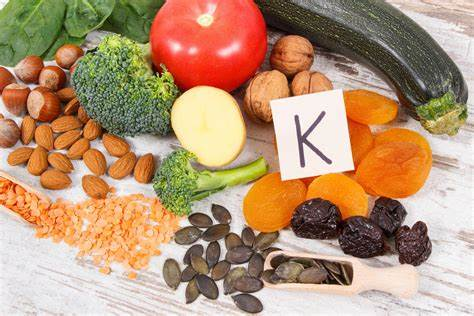

A-vitamin
A-vitaminok a szem, belső szervek, bőrhöz , valamint fontosak az immunrendszer megfelelő működéséhez is.
források:sárga répa, spenót, édesburgonya, stb..
B-vitaminok
A B-vitaminok csoportja sok fontos funkciót lát el a szervezetben, például segítenek az energiatermelésben és a vérképzésben is.
források:bab, vöröslencse, céklalé, retek, lazac, saláta, máj, stb..
C-vitamin
A C-vitamin fontos szerepet játszik az immunrendszer megfelelő működésében, valamint segít az egészséges bőr és szövetek kialakulásában is.
források:brokkoli, kivi, paprika, kelbimbó, citrom, eper, narancs, ananász, stb..
D-vitamin
A D-vitamin fontos a csontok és fogak egészségének megőrzésében, valamint segít az immunrendszer működésének fenntartásában is.
források: gomba, tej és tejterméket, tojás, tonhal, tőkehal, stb..
E-vitamin
A E-vitamin erős antioxidáns, amely védi a sejteket a szabadgyökök káros hatásaitól.
források: magok, napraforgó olaj, avokádó, mangó, libahús, stb..
K-vitamin
A K-vitamin fontos szerepet játszik a véralvadás folyamatában, valamint segíti a csontok egészségét is.
források: petrezyelyem, brokkoli, kelbimbó, káposzta, stb..
